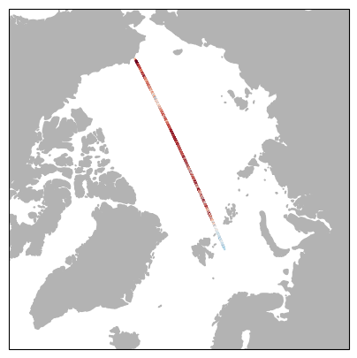
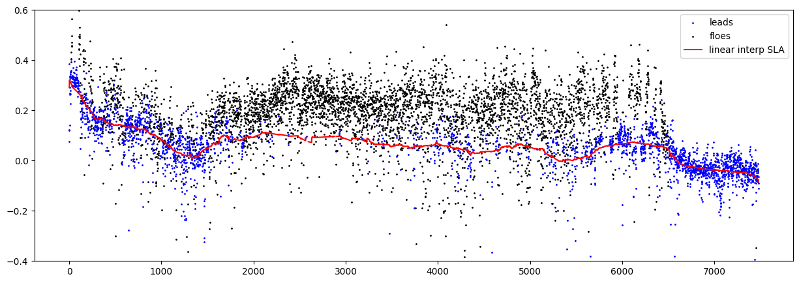
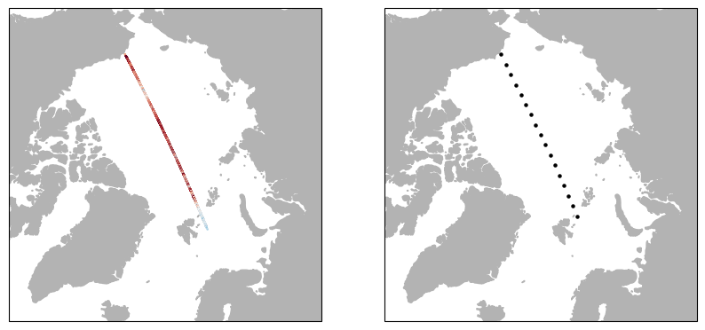

Along track interpolation#
import os
import re
import glob
import numpy as np
import pandas as pd
import warnings
warnings.filterwarnings('ignore')
import matplotlib.pyplot as plt
import cartopy.crs as ccrs
import cartopy.feature as cfeat
from datetime import datetime, timedelta
from GPSat import get_data_path, get_parent_path
from GPSat.dataprepper import DataPrep
from GPSat.utils import WGS84toEASE2_New, EASE2toWGS84_New, cprint, grid_2d_flatten, get_weighted_values
from GPSat.local_experts import LocalExpertOI, get_results_from_h5file
from GPSat.plot_utils import plot_pcolormesh, get_projection, plot_pcolormesh_from_results_data
def GCdist(X,Xs):
radius = lambda lat : np.sqrt(((6378137**2 * np.cos(lat))**2 + (6356752**2 * np.sin(lat))**2/\
(6378137 * np.cos(lat))**2 + (6356752 * np.sin(lat))**2))
minlat = min(np.min(X.T[(1,)].T),np.min(Xs.T[(1,)].T))
maxlat = max(np.max(X.T[(1,)].T),np.max(Xs.T[(1,)].T))
lon1 = np.radians(X.T[(0,)].T) ; lat1 = np.radians(X.T[(1,)].T)
lon2 = np.radians(Xs.T[(0,)].T) ; lat2 = np.radians(Xs.T[(1,)].T)
r = 6356752#np.mean(radius(np.arange(minlat,maxlat)))
Clat1 = np.cos(lat1) ; Clat2 = np.cos(lat2)
Slat1 = np.sin(lat1) ; Slat2 = np.sin(lat2)
Clon1 = np.cos(lon1) ; Clon2 = np.cos(lon2)
Slon1 = np.sin(lon1) ; Slon2 = np.sin(lon2)
n1 = np.array([Clat1*Clon1,Clat1*Slon1,Slat1]).T
n2 = np.array([Clat2*Clon2,Clat2*Slon2,Slat2]).T
return r*np.arccos(np.dot(n1,n2.T))
Load data#
#indices for GPOD data:
#0 = Lon
#1 = Lat
#2 = Interpolated SLA
#3 = Error in interpolated SLA
#4 = Freeboard
#5 = Pulse Peakiness
#6 = Lew
#7 = Class (1=Lead, 2=Floe, 3=OO)
#8 = Sigma 0
#9 = Raw Elevation
#10 = Mean Sea-surface
#11 = SIC
#12 = Sea ice type (0=FYI, 1=MYI)
#13 = Snow depth
#14 = Snow density
#15 = Sea ice thickness
#16 = GPOD SLA
#17 = GPOD SSH
#18 = GPOD SWH
#19 = Elevation from Samosa
interp_date = datetime(2019,1,15)
grab_dates = sorted([interp_date-timedelta(days=x) for x in range(5)]+[interp_date+timedelta(days=x) for x in range(1,5)])
grab_dates = [x.strftime('%Y%m%d') for x in grab_dates]
x = []
y = []
t = []
lon = []
lat = []
dates = []
classif = []
interpSLA = []
elev = []
satellite = []
trackID = []
dirs = sorted(glob.glob('/Users/wg4031/Dropbox/GPOD_DATA/*'))
count = 0
for directory in dirs:
tracks = sorted(glob.glob(directory+'/*v1.proc'))
SAT = directory.split('/')[-1]
if (SAT == 'CS2_SARIN') or (SAT == 'CS2_SAR'):
SAT = 'CS2'
for track in tracks:
date = track.split('/')[-1].split('T')[0].split('_')[-1]
if date in grab_dates:
time = 14975 + (datetime(int(date[:4]),int(date[4:6]),int(date[6:8]))-datetime(2011,1,1)).days
f = np.genfromtxt(track)
ID = np.where((f[:,7]<3) & (f[:,11]>=0.75))[0]
classes = np.copy(f[ID,7]).astype(str)
classes[classes=='1.0'] = 'lead'
classes[classes=='2.0'] = 'floe'
elvmss = f[ID,9]-f[ID,10]
elvmss[classes=='floe'] = elvmss[classes=='floe']-0.1626 #subtract 16.26cm bias (see Lawrence et al., 2019)
xg,yg = WGS84toEASE2_New(f[ID,0],f[ID,1])
N = len(xg)
x.extend(xg)
y.extend(yg)
t.extend([time]*N)
lon.extend(f[ID,0])
lat.extend(f[ID,1])
dates.extend([date]*N)
classif.extend(classes)
interpSLA.extend(f[ID,2])
elev.extend(elvmss)
satellite.extend([SAT]*N)
trackID.extend([count]*N)
count += 1
df = pd.DataFrame({'x':np.array(x),'y':np.array(y),'t':np.array(t),'lon':np.array(lon),'lat':np.array(lat),'date':np.array(dates),
'elevation':elev,'interpSLA':np.array(interpSLA),'class':np.array(classif),
'SAT':np.array(satellite),'track':np.array(trackID)})
df
| x | y | t | lon | lat | date | elevation | interpSLA | class | SAT | track | |
|---|---|---|---|---|---|---|---|---|---|---|---|
| 0 | 947448.687203 | -488832.119832 | 17907 | 62.708721 | 80.443011 | 20190111 | 0.2297 | NaN | lead | CS2 | 0 |
| 1 | 947680.718825 | -489028.519289 | 17907 | 62.705059 | 80.440348 | 20190111 | 0.2057 | 0.2436 | lead | CS2 | 0 |
| 2 | 947912.744886 | -489224.918679 | 17907 | 62.701400 | 80.437686 | 20190111 | 0.2392 | 0.2432 | lead | CS2 | 0 |
| 3 | 948144.776143 | -489421.321425 | 17907 | 62.697742 | 80.435023 | 20190111 | 0.2544 | 0.2428 | lead | CS2 | 0 |
| 4 | 948376.801017 | -489617.725708 | 17907 | 62.694087 | 80.432361 | 20190111 | 0.2377 | 0.2424 | lead | CS2 | 0 |
| ... | ... | ... | ... | ... | ... | ... | ... | ... | ... | ... | ... |
| 2063569 | -766279.063373 | 574544.764128 | 17915 | -126.862023 | 81.416562 | 20190119 | 0.1289 | NaN | floe | S3B | 877 |
| 2063570 | -766082.222460 | 574814.733162 | 17915 | -126.882009 | 81.416521 | 20190119 | 0.0204 | NaN | floe | S3B | 877 |
| 2063571 | -765688.540353 | 575354.664293 | 17915 | -126.921980 | 81.416437 | 20190119 | 0.1038 | NaN | floe | S3B | 877 |
| 2063572 | -765491.690171 | 575624.619829 | 17915 | -126.941964 | 81.416393 | 20190119 | 0.1352 | NaN | floe | S3B | 877 |
| 2063573 | -765294.828773 | 575894.581675 | 17915 | -126.961950 | 81.416348 | 20190119 | 0.2033 | NaN | floe | S3B | 877 |
2063574 rows × 11 columns
Select profile for interpolation#
interptrack = 105 #track on interp day 20190115
df_val = df.loc[df['track']==interptrack]
fig,ax = plt.subplots(1,figsize=(5,5),subplot_kw=dict(projection=ccrs.NorthPolarStereo()))
ax.set_extent([-180,180,65,90],ccrs.PlateCarree())
ax.add_feature(cfeat.LAND, color=(0.7,0.7,0.7))
ax.scatter(df_val['lon'],df_val['lat'],s=0.5,c=df_val['elevation'],cmap='RdBu_r',vmin=-0.3,vmax=0.3,transform=ccrs.PlateCarree())
plt.show()
df_val

| x | y | t | lon | lat | date | elevation | interpSLA | class | SAT | track | |
|---|---|---|---|---|---|---|---|---|---|---|---|
| 387897 | -721352.574060 | 1.972270e+06 | 17911 | -159.910142 | 71.106008 | 20190115 | 0.0765 | NaN | lead | CS2 | 105 |
| 387898 | -721212.146745 | 1.972004e+06 | 17911 | -159.911246 | 71.108718 | 20190115 | 0.1221 | 0.2910 | lead | CS2 | 105 |
| 387899 | -721071.715415 | 1.971738e+06 | 17911 | -159.912349 | 71.111428 | 20190115 | 0.1203 | 0.2950 | lead | CS2 | 105 |
| 387900 | -707737.994071 | 1.946434e+06 | 17911 | -160.018357 | 71.368866 | 20190115 | 0.3850 | 0.3201 | lead | CS2 | 105 |
| 387901 | -707457.441887 | 1.945901e+06 | 17911 | -160.020614 | 71.374285 | 20190115 | 0.1397 | 0.3196 | lead | CS2 | 105 |
| ... | ... | ... | ... | ... | ... | ... | ... | ... | ... | ... | ... |
| 395372 | 742263.922646 | -1.130844e+06 | 17911 | 33.280107 | 77.864860 | 20190115 | -0.0734 | -0.0768 | lead | CS2 | 105 |
| 395373 | 742380.731543 | -1.131123e+06 | 17911 | 33.277757 | 77.862181 | 20190115 | -0.0855 | -0.0768 | lead | CS2 | 105 |
| 395374 | 742497.533982 | -1.131402e+06 | 17911 | 33.275407 | 77.859502 | 20190115 | -0.1098 | -0.0768 | lead | CS2 | 105 |
| 395375 | 751717.101002 | -1.153452e+06 | 17911 | 33.092727 | 77.647806 | 20190115 | -0.0639 | -0.0841 | lead | CS2 | 105 |
| 395376 | 755447.025133 | -1.162383e+06 | 17911 | 33.020334 | 77.562031 | 20190115 | -0.0913 | NaN | lead | CS2 | 105 |
7480 rows × 11 columns
leads = np.where(df_val['class'] == 'lead')
floes = np.where(df_val['class'] == 'floe')
fig,ax = plt.subplots(1,figsize=(15,5))
ax.scatter(leads,df_val['elevation'].iloc[leads],color='b',s=1,label='leads')
ax.scatter(floes,df_val['elevation'].iloc[floes],color='k',s=1,label='floes')
ax.plot(np.arange(len(df_val['interpSLA'])),df_val['interpSLA'],color='r',label='linear interp SLA')
ax.set_ylim(-0.4,0.6)
ax.legend()
plt.show()

Generate expert locations at 200 km#
#divide track into 200 km points for expert locations
Xs = np.array([df_val['lon'],df_val['lat']]).T
r_exp = GCdist(Xs,Xs) #compute distance matrix
exp_grid = np.arange(0,np.sum(r_exp[0,:]),200e3)
locs = []
for ix in exp_grid:
temp = np.abs(r_exp[0,:]-ix)
dm = np.where(temp==np.min(temp))
if len(locs)<=16:
locs.append(dm[0][0])
fig,ax = plt.subplots(1,2,figsize=(10,5),subplot_kw=dict(projection=ccrs.NorthPolarStereo()))
for c in range(2):
ax[c].set_extent([-180,180,65,90],ccrs.PlateCarree())
ax[c].add_feature(cfeat.LAND, color=(0.7,0.7,0.7))
if c == 0:
ax[c].scatter(df_val['lon'],df_val['lat'],c=df_val['elevation'],s=0.5,cmap='RdBu_r',vmin=-0.3,vmax=0.3,transform=ccrs.PlateCarree())
else:
ax[c].scatter(df_val['lon'].iloc[locs],df_val['lat'].iloc[locs],s=5,c='k',transform=ccrs.PlateCarree())
plt.show()
experts = df_val.iloc[locs]
experts

| x | y | t | lon | lat | date | elevation | interpSLA | class | SAT | track | |
|---|---|---|---|---|---|---|---|---|---|---|---|
| 387897 | -721352.574060 | 1.972270e+06 | 17911 | -159.910142 | 71.106008 | 20190115 | 0.0765 | NaN | lead | CS2 | 105 |
| 388171 | -629429.072718 | 1.796879e+06 | 17911 | -160.695143 | 72.885470 | 20190115 | 0.1354 | 0.1677 | lead | CS2 | 105 |
| 388585 | -537650.078249 | 1.619503e+06 | 17911 | -161.634624 | 74.673121 | 20190115 | 0.1417 | 0.1333 | lead | CS2 | 105 |
| 388960 | -446058.062505 | 1.440178e+06 | 17911 | -162.790982 | 76.467810 | 20190115 | 0.0352 | 0.0659 | lead | CS2 | 105 |
| 389233 | -356328.511417 | 1.262205e+06 | 17911 | -164.235284 | 78.235455 | 20190115 | 0.2307 | 0.0084 | floe | CS2 | 105 |
| 389541 | -267113.377118 | 1.082937e+06 | 17911 | -166.144200 | 80.000143 | 20190115 | 0.0629 | 0.0902 | lead | CS2 | 105 |
| 389873 | -178581.952236 | 9.026977e+05 | 17911 | -168.809590 | 81.753796 | 20190115 | 0.2142 | 0.0919 | floe | CS2 | 105 |
| 390413 | -91030.218050 | 7.220883e+05 | 17911 | -172.814898 | 83.480149 | 20190115 | 0.1972 | 0.0885 | floe | CS2 | 105 |
| 391014 | -4351.235244 | 5.408929e+05 | 17911 | -179.539092 | 85.155651 | 20190115 | -0.0812 | 0.0879 | floe | CS2 | 105 |
| 391577 | 81686.656041 | 3.586163e+05 | 17911 | 167.167942 | 86.706566 | 20190115 | 0.0244 | 0.0560 | lead | CS2 | 105 |
| 392037 | 166792.407587 | 1.758645e+05 | 17911 | 136.516600 | 87.829824 | 20190115 | 0.0953 | 0.0528 | lead | CS2 | 105 |
| 392520 | 250813.488996 | -7.027848e+03 | 17911 | 88.394980 | 87.753421 | 20190115 | 0.1115 | 0.0395 | floe | CS2 | 105 |
| 392986 | 333853.643975 | -1.902791e+05 | 17911 | 60.319124 | 86.559048 | 20190115 | NaN | 0.0447 | floe | CS2 | 105 |
| 393475 | 416258.568236 | -3.746666e+05 | 17911 | 48.010210 | 84.984200 | 20190115 | 0.1099 | 0.0122 | lead | CS2 | 105 |
| 394012 | 497136.534812 | -5.581859e+05 | 17911 | 41.689183 | 83.303729 | 20190115 | 0.3341 | 0.0733 | floe | CS2 | 105 |
| 394427 | 577686.089196 | -7.435644e+05 | 17911 | 37.844160 | 81.561593 | 20190115 | -0.0128 | 0.0171 | lead | CS2 | 105 |
| 394814 | 655956.286806 | -9.262835e+05 | 17911 | 35.304574 | 79.823648 | 20190115 | -0.0418 | -0.0356 | lead | CS2 | 105 |
Interpolate along-track#
#WHERE TO SAVE
store_path = get_parent_path("/Users/wg4031/Dropbox/", "GPSatSVGP_CS2S3_alongtrack_SLA_3D.h5")
#SET PARAMETERS OF MODEL (e.g., use data within 300 km and +/- 4 days)
data = {
"data_source": df.loc[(df['class']=='lead') & (np.abs(df['elevation'])<0.6) & (~np.isnan(df['elevation']))],
"obs_col": "elevation",
"coords_col": ["x", "y", "t"],
# selection criteria used for each local expert
"local_select": [
{
"col": [
"x",
"y"
],
"comp": "<=",
"val": 100_000
},
{
"col": "t",
"comp":"<=",
"val":2
},
{
"col": "t",
"comp":">=",
"val":-2
}
],
"global_select": [
{
"col": "lat",
"comp": ">=",
"val": 45
}
]
}
#GIVE DATAFRAME OF EXPERTS
local_expert = {
"source": experts
}
#GIVE DATAFRAME OF PREDICTION LOCATIONS (predict at all lead and floe locations along track)
pred_loc = {
"method": "from_dataframe",
"df": df_val,
"max_dist": 200_000
}
#SETUP SPARSE GP MODEL (PLAY WITH MINIBATCH AND INDUCING POINTS)
model = {
"oi_model": "GPflowSVGPModel",
"init_params": {
# scale (divide) coordinates
"coords_scale": [10000, 10000, 1],
"minibatch_size": 100,
"num_inducing_points":200
},
"constraints": {
# lengthscales - same order coord_col (see data)
"lengthscales": {
"low": [1e-08, 1e-08, 1e-08],
"high": [200000, 200000, 4]
}
}
}
locexp = LocalExpertOI(expert_loc_config=local_expert,
data_config=data,
model_config=model,
pred_loc_config=pred_loc)
# run optimal interpolation
locexp.run(store_path=store_path,
optimise=True)
#SMOOTH HYPERPARMETERS
smooth_configs = {"lengthscales": dict(l_x=200_000, l_y=200_000, max=12),
"likelihood_variance": dict(l_x=200_000, l_y=200_000),
"kernel_variance": dict(l_x=200_000, l_y=200_000, max=0.1)}
smooth_hyperparameters(result_file=store_path,
params_to_smooth=["lengthscales", "kernel_variance", "likelihood_variance"],
smooth_config_dict=smooth_configs,
save_config_file=False)
# %%
# ---
# Make predictions with smoothed hyperparameters
# ---
model['load_params'] = {"file": store_path, "table_suffix": "_SMOOTHED"}
locexp = LocalExpertOI(expert_loc_config=local_expert,
data_config=data,
model_config=model,
pred_loc_config=pred_loc)
locexp.run(store_path=store_path,
optimise=False,
predict=True,
table_suffix='_SMOOTHED')
with pd.HDFStore(store_path) as store:
store.remove('inducing_mean')
store.remove('inducing_mean_SMOOTHED')
store.remove('inducing_chol')
store.remove('inducing_chol_SMOOTHED')
store.remove('inducing_points')
store.remove('inducing_points_SMOOTHED')
os.system('ptrepack --chunkshape=auto --propindexes --complib=blosc '+store_path+' temp_store_3D.csv')
os.system('rm '+store_path)
os.system('mv temp_store_3D.csv '+store_path)
print('Done!')
'data_select': 0.000 seconds
'load': 0.000 seconds
in json_serializable - key: 'data_source' has value DataFrame/Series, but is too long: 933261 > 100
storing as str
import pandas as pd
df = pd.DataFrame({'x':[0,1,2,3,4],'y':[5,6,7,8,9]})
#df.to_hdf('~/Documents/test.h5','data')
predictions = pd.read_hdf("/Users/wg4031/Dropbox/GPSatSVGP_CS2S3_alongtrack_SLA_3D.h5",'preds_SMOOTHED')
from GPSat.postprocessing import glue_local_predictions
predictions_glued = glue_local_predictions(predictions,experts)
Signature:
glue_local_predictions(
preds_df: pandas.core.frame.DataFrame,
inference_radius: pandas.core.frame.DataFrame,
R: Union[int, float, list] = 3,
) -> pandas.core.frame.DataFrame
Docstring:
DEPRECATED. See ``glue_local_predictions_1d`` and ``glue_local_predictions_2d``.
Glues overlapping predictions by taking a normalised Gaussian weighted average.
WARNING: This method only deals with expert locations on a regular grid
Parameters
----------
preds_df: pd.DataFrame
containing predictions generated from local expert OI. It should have the following columns:
- pred_loc_x (float): The x-coordinate of the prediction location.
- pred_loc_y (float): The y-coordinate of the prediction location.
- f* (float): The predictive mean at the location (pred_loc_x, pred_loc_y).
- f*_var (float): The predictive variance at the location (pred_loc_x, pred_loc_y).
expert_locs_df: pd.DataFrame
containing local expert locations used to perform OI. It should have the following columns:
- x (float): The x-coordinate of the expert location.
- y (float): The y-coordinate of the expert location.
sigma: int, float, or list, default 3
The standard deviation of the Gaussian weighting in the x and y directions.
If a single value is provided, it is used for both directions.
If a list is provided, the first value is used for the x direction and the second value is used for the y direction. Defaults to 3.
Returns
-------
pd.DataFrame:
dataframe consisting of glued predictions (mean and std). It has the following columns:
- pred_loc_x (float): The x-coordinate of the prediction location.
- pred_loc_y (float): The y-coordinate of the prediction location.
- f* (float): The glued predictive mean at the location (pred_loc_x, pred_loc_y).
- f*_std (float): The glued predictive standard deviation at the location (pred_loc_x, pred_loc_y).
Notes
-----
The function assumes that the expert locations are equally spaced in both the x and y directions.
The function uses the scipy.stats.norm.pdf function to compute the Gaussian weights.
The function normalizes the weighted sums with the total weights at each location.
File: ~/Documents/OI4Michel/GPSat/GPSat/postprocessing.py
Type: function